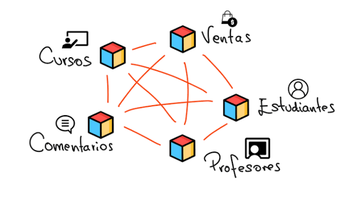
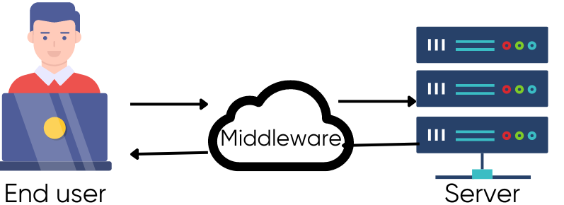
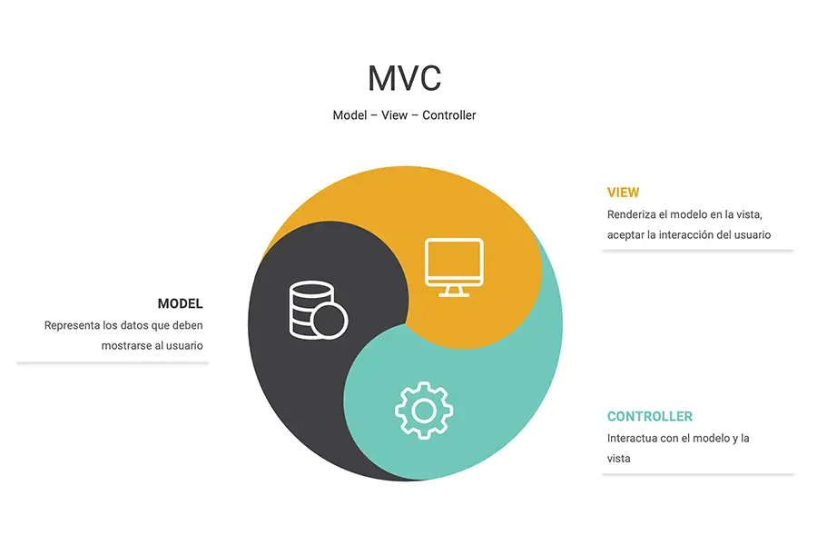

| Palabra con M | Definicion en Español | Definicion en Ingles | Eje. Imagen |
|---|---|---|---|
| 1. Microservicios - Microservices | Estilo arquitectónico que estructura una aplicación como una colección de servicios pequeños, autónomos y acoplados de forma floja. | An architectural style that structures an application as a collection of small, autonomous, and loosely coupled services. |  |
| 2. Migración - Migration | Proceso de transferir datos, esquemas o software de un sistema, formato o entorno a otro. | The process of transferring data, schemas, or software from one system, format, or environment to another. | |
| 3. Middleware | Software que actúa como un puente o capa intermedia para conectar diferentes aplicaciones, datos o usuarios. | : Software that acts as a bridge or intermediate layer to connect different applications, data, or users. |  |
| 4. Modelo (MVC) - Model (MVC) | En arquitectura de software, es la capa que representa los datos y la lógica de negocio de la aplicación. | In software architecture, the layer that represents the data and the core business logic of the application. |  |
| 5. Metadatos - Metadata | Datos altamente estructurados que describen las características, origen o estructura de otros datos (ej. "datos sobre datos"). | Highly structured data that describes the characteristics, origin, or structure of other data (e.g., "data about data"). |